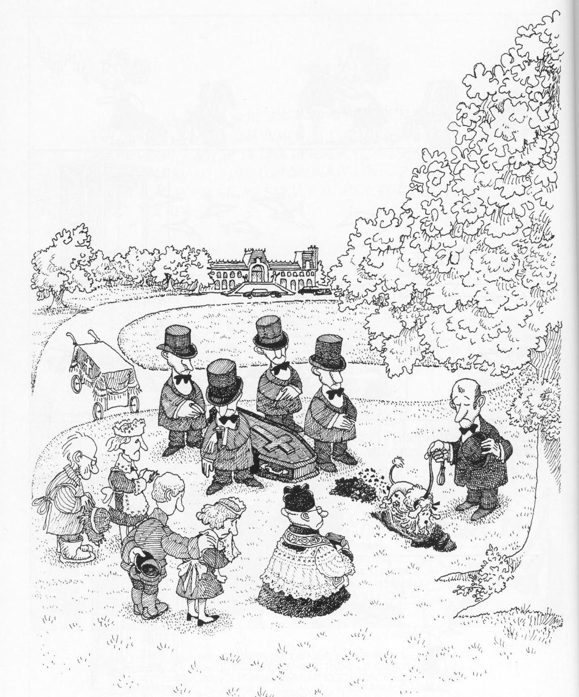

La Teoría de la incongruencia del humor planteada por Carroll junta elementos incongruentes entre sí, lo que lo lleva a un dilema de difícil solución. Puntualmente, la Teoría cognitivista de las emociones resulta ser tanto necesaria como incompatible con la propuesta del humor de Carroll; el dilema Y consiste en si es mejor conservar o rechazar dicha teoría.

Abandonar la Teoría cognitivista
de las emociones
Conservar la Teoría cognitivista
de las emociones
Razones para abandonar la Teoría cognitivista de las emociones.
3. El humor es el planteamiento de una escena sin sentido (de la Teoría de la incongruencia.
Razón para conservar la Teoría cognitivista de las emociones.
3. El humor es el planteamiento de una escena sin sentido (de la Teoría de la incongruencia.
Abandonar la Teoría cognitivista
de las emociones
Conservar la teoría cognitivista
de las emociones